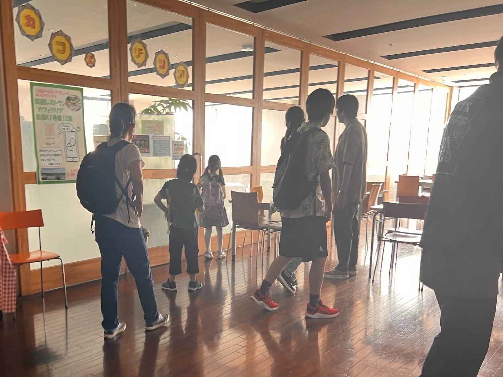
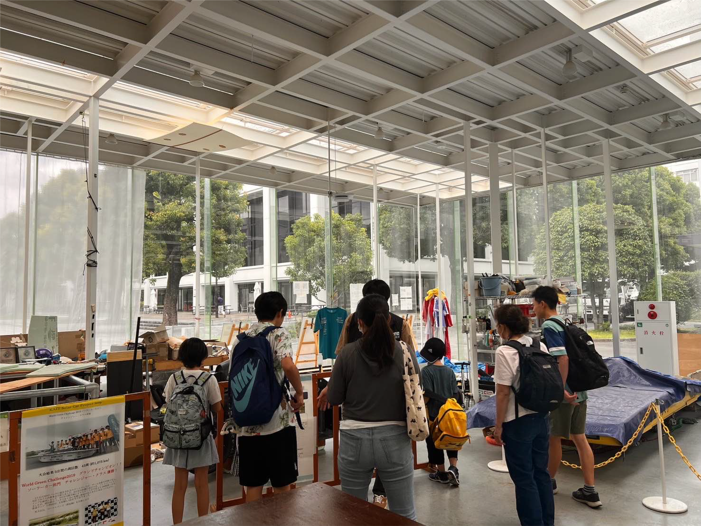

大学探検では、KAIT広場や教室、食堂などを巡りました。


KAIT広場では一緒に記念撮影をしたり、教室の席に座って大学生気分になったり、食堂では大学生が食べるメニューや景色をみて楽しく大学内を探検しました。
その中でも、大学探検して子供たちが興味を持ったのはKAIT工房です。

KAIT工房では糸のこ盤や木工旋盤などがある木工エリア、陶芸や鋳造を作ることができる陶芸・鋳造エリア、3Dプリンターやレーザー加工機があるパソコン・印刷エリアを探検しました。 特にパソコン・印刷エリアでは、3Dプリンターやレーザー加工機で作られた作品が展示されており、子供たちは実際に作品を見て・触れて強い関心を抱いていました。
缶バッチづくりでは、用意した好きなイラストを２枚選んでもらい缶バッチを作りました。
缶バッチはEDTCスタッフと一緒に、選んだイラストを缶バッチの大きさにカットしたり、カットしたイラストと缶バッチの部品を順番に缶バッチメーカーにセットして作っていきました。。
子供たちはスタッフの説明をよく聞いてくれたため、2 個目からはスタッフのサポートがほとんど必要ないほど上手にできていました。
イベントに参加した子供たちからは、「大学研究所はどんなところだろう？」などの疑問や、「缶バッチづくり楽しかった！」と嬉しい声をいただきました。